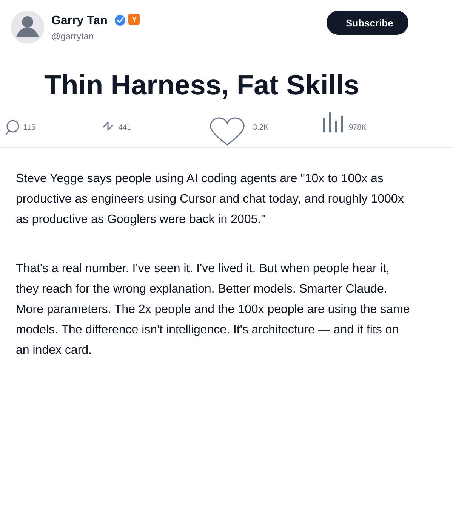
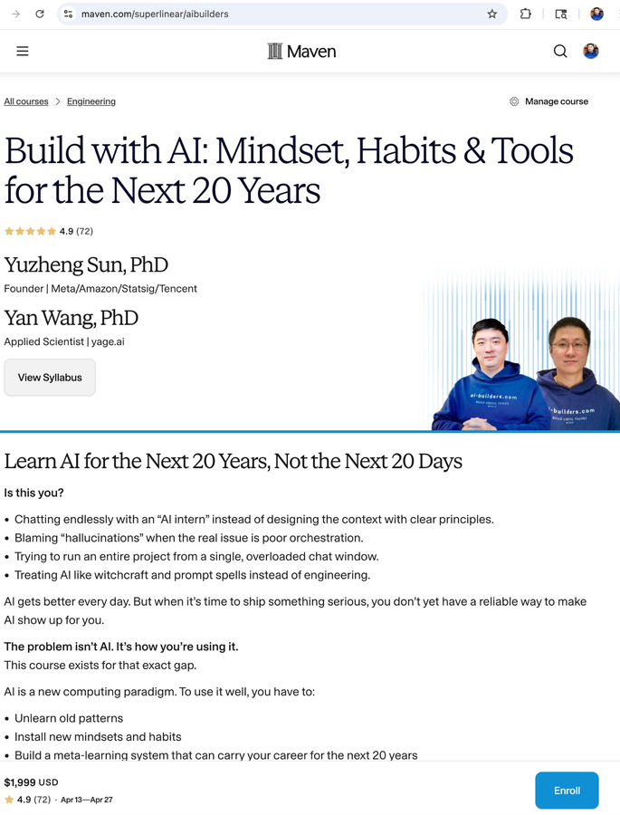

The real shift is not better answers in a chat window. It is a different way of organizing work.
Yuzheng Sun
Chat and agents are different work methods.
Not the same thing with different branding.
Agents matter because they compound.
Context, files, tests, and memory survive beyond a single session.
The aspiration is identity change.
From AI user to AI builder.

Chat = swap in a new tool. Agents = redesign the line.
2-day to 3-5 business daysCustomer-facing shipping promise.
Another place the same promise appears.
Support copy with the same policy embedded.
The policy is duplicated. Change is expensive and error-prone.
This is where chat stalls: it can suggest where to edit, but it does not leave behind a better system.
Implement the policy change across the repo.
3-5 business daysGive advice, sample code, and likely edit locations.
Read the repo, apply the edits, run checks, and leave a cleaner architecture behind.
The business rule now lives in one place.
Checkout, email, and help center stay aligned.
The next change is now safer and cheaper.
If the first run was only a patch, the second change is expensive again. If the first run created structure, the second change is cheap.
That is compounding.
Good judgment about what AI can and cannot do.
AI work can enter the workflow directly.
Complete tasks move to agentic loops.
Experience accumulates into reusable system behavior.
AI starts surfacing better options, tradeoffs, and blind spots.

Self-paced AI Builders: $100 off for Amazon attendees.
Register: ai-builders.com
Format: practical, project-based, and built around agentic workflows instead of prompt tricks.
Risk: 14-day refund.
All reviews are public and attributable on Maven. The strongest signal is not “nice content.” It is lasting behavior change.
A learner from Yipi Tech said the course helped him build a tool from scratch in an unfamiliar language and earn back roughly 2x the tuition.
Marvin, Developer, Yipi Tech
A Google UX leader said that even as a daily AI user, she still learned a deeper and more effective way to build with AI.
Clairy Cheung, UX Manager, Google
A Microsoft applied scientist said the biggest gain was a mindset shift: using AI to solve real problems became a habit, not an occasional experiment.
Tingting Wang, Applied Scientist, Microsoft
Separate signal from hype and build a correct mental model of what AI is.
Get AI output into the workflow instead of leaving it as a chat answer.
Diagnose failure modes instead of reprompting blindly.
Hand over outcomes, not micro-steps, through agentic loops.
Turn one-off wins into compounding systems and eventually a thinking partner.
AGENTS.md, MEMORY.md, reusable templatesThese are methods, not prompts.
That is why agents can capture compounding value and chat alone cannot.
If you want the full upgrade path, the course details are at ai-builders.com.
Amazon attendees: self-paced AI Builders, $100 off.